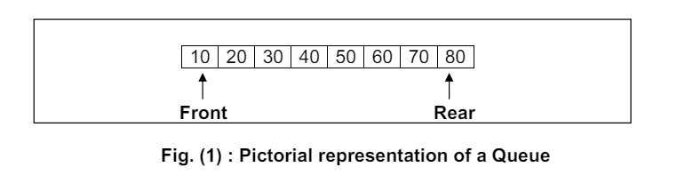

Queue:Is a non-primitive linear data structure that permits insertion of an element at one end and deletion of an element at other end.
The end at which the deletion of an
element take place is called front,
and the end at which insertion of a new element can
take place is called rear
The first element that gets added into the queue is the first one to get removed from the list.
Hence, Queue is also referred to as First-In-First-Out (FIFO)
Real life exampleThe name
‘Queue’ comes from the everyday use of the term. Consider a railway reservation booth,
at which we have to get into the reservation queue.
New customers got into the queue
from the rear end, whereas the customers who get their seats reserved leave the queue
from the front end.
Another example:-In a resturant first come first served
The process to add element into queue is called Enqueue and the process of removing a element in a queue called Dequeue
Simple queue is covered read just the the previous paragraphs
Circular Queue: The simple queue has a drawback where, if the array is not full, it is still considered
full due to the rear pointer reaching the end
Dequeue:-The word dequeue is a short form of double-ended queue. It is pronounced as deck.
Dequeue defines a data structure where elements can be added or deleted at either the fron end or rear end, but no changes can be made elsewhere in the list.
The dequeue is a generalisation of both a stack and a queue
Priority Queue: A priority queue is a type of queue that arranges elements based on their priority values.
Elements with higher priority values are typically retrieved before elements with lower priority values.
In a priority queue, each element has a priority value associated with it.